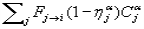
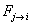
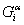
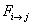
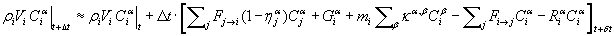

where
is the rate of air mass flow from c.v. j to c.v. i and is the filter efficiency in the path
is the filter efficiency in the path

.Within CONTAM a contaminant may be added to c.v. i by:

where
is the rate of air mass flow from c.v. j to c.v. i and is the filter efficiency in the path

.
A species may be removed from the c.v. by:
 where
where

is the rate of air mass flow from c.v. i to c.v. j, and
A species may be added or removed by first-order chemical reactions with other species at the rate
 where ka,b is the kinetic reaction coefficient in c.v. i between species a and b. (Sign convention: positive k for generation and negative k for removal). This linear expression currently limits the kinds of reactions that can be modeled.
where ka,b is the kinetic reaction coefficient in c.v. i between species a and b. (Sign convention: positive k for generation and negative k for removal). This linear expression currently limits the kinds of reactions that can be modeled.
Combining these processes into a single equation for the rate of mass gain of species a in c.v. i gives:

|
(6) |
The transient conservation of species mass in a control volume is given by:
(mass of contaminant a in c.v. i at time t+Dt ) =
(mass contaminant a in c.v. i at time t) +
Dt × (rate gain of contaminant a – rate loss of contaminant a)
Or in equation form as:
|
 |
(7) |